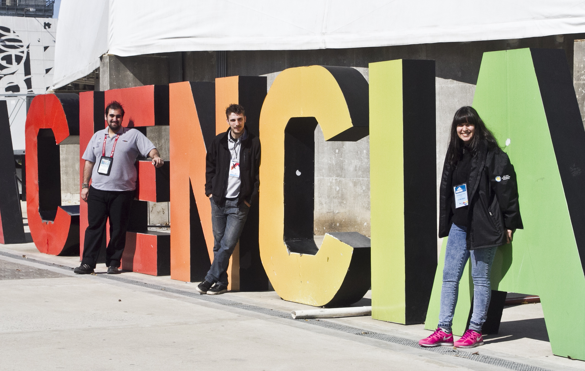

La patria es... tecnópolis. por matías luque // Fotos: lucas
vallorani.
Los científicos del palo

Cuatro mil universitarios, la mayoría estudiantes de distintas ramas de la
ciencia, son el nexo entre los asistentes a la megamuestra Tecnópolis, y
sus atracciones.
divulgación
Tienen entre 21 y 24 años y una misión muy importante: ser el puente entre los miles de visitantes diarios y el conocimiento científico. Yo trabajo acá, los conozco a todos. Una de ellas es Paula Hermindaes, la coordinadora del Acuario. Mientras hablamos siento su pasión docente y me cuenta que la cultiva desde que es ayudante de cátedra en la carrera biología. Paula está orgullosa de ver cómo los estudiantes de carreras muy estructuradas se convirtieron en divulgadores y dice que pueden expresarse muy bien porque están hablando de lo que les gusta.
“Cuando les decimos a los visitantes que los expositores somos estudiantes de la facultad responden muy bien”, me cuenta Paula. “Les emociona ver que estamos ayudando a difundir conocimiento que se produce en nuestro país. Hay que tener mucha pasión para hacer lo que hacemos, porque es un gran desafío estar cara a cara con el público”.
Me voy del Acuario pensando que Tecnópolis también es una suerte de incubadora de vocación docente y divulgativa. Que cuando los pibes salgan de acá a buscar un cargo docente en alguna escuela van a poder decir que se pararon frente a miles de personas con distintas inquietudes y superaron el miedo.
esto no es disney
El entretenimiento juega fuerte en la megamuestra, pero el objetivo no es hacer un parque de diversiones, sino algo educativo. En ese sentido sigue la línea de la República de los Niños de La Plata, que Perón mandó a construir en 1951,
tras expropiar una cancha de golf a unos empresarios.
En Tecnópolis, además de pasar un buen rato en el skatepark, en la fábrica de hip hop, en Paka Paka o en Tierra de Dinos, los chicos también se llevan una mirada didáctica del cruce de los Andes, nociones básicas de fuerzas, energías y matemáticas, mientras aprenden sobre insectos y peces.
la vanguardia
Paula me señala a Nicolás Villagrán, un estudiante de física que desde este año es coordinador del espacio Matemáticas. Y claro, expositor. “Mi rol acá es una forma de devolverle a la sociedad todo lo que me dio”, dice Nicolás y confiesa que estando Tecnópolis puede ver como su desarrollo científico sirve para algo y sale del ámbito del laboratorio para interactuar con el mundo y ganar experiencia.
Nicolás está muy avanzado en la cursada de su carrera, va por el cuarto año de su carrera, pero admite que esto es algo totalmente distinto. “Para mí esto no tiene precio. Es estar en el lugar indicado en el momento indicado. Estoy en la vanguardia de mi área de estudio”, dice.
la mente crítica
Rodrigo Martin está en el laboratorio de Paleo, rodeado de dinosaurios en tamaño real que se mueven, gritan y apasionan a todos. Rodrigo es estudiante de Paleontología y tiene un sueño: vivir en una sociedad con individuos a los que no se los pueda engañar, una sociedad despierta, una sociedad con una mente crítica.
Y para eso trabaja desde su rol de expositor, transmitiendo conocimientos sobre el último dinosaurio descubierto en Argentina y contagiando la idea de “observar y preguntarse siempre el por qué de las cosas”, como el mismo dice. Rodrigo alerta: “Los conocimientos avanzaron. Las películas y medios de comunicación no siempre dicen las cosas tal como son en realidad. Hay que cuestionar. Hay que salir a buscar la verdad porque no te la dan servida”. Y es en esa búsqueda que tanto lo apasiona en la que trabaja y trabaja.
pasión
Sigo mi camino por el parque y pienso en Paula, Nicolás, Rodrigo y todos los chicos que estudian lo que les gusta y en Tecnópolis pueden llevarlo a la práctica. Mi país tiene que tener un poco de cada uno de estos pibes para andar bien.
Pienso en Belén Daizo, otra de las expositoras, que cuando no trabaja en Tecnópolis está en México desentrañando el misterio de la Pirámide de Comalcalco o en Chile desempolvando un nuevo yacimiento arqueológico. Esa es la pasión de la vocación: ir detrás del sueño.
Yo también quiero una sociedad despierta -me digo- con ciudadanos críticos. Para que no nos roben los de arriba, para que no nos mientan los de afuera. Producir nuestro propio conocimiento científico y hacer nuestro propio camino. Estos pibes que conocí aman lo que hacen y lo contagian.